Game Development Projects
Unity Play
Most of my game development projects can be seen on Unity Play.My Unity Play
The source code can be seen on my Github.
My Github Profile
We Have Stardew Valley at Home
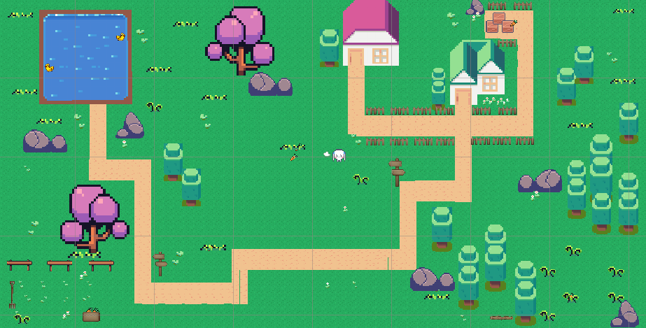 Named after the iconic game Stardew Valley and the meme 'we have xyz at home' which is what most parents tell their kids instead of getting them the genuine product the child is asking for, instead offering a meager substitute.This is a small mobile game that features a joystick controller for the player to navigate the 2D pixel art style environment.
The player controls the little bunny character and aims to collect the grass, carrots and easter eggs which are counted on the UI toolbar.
This game is hardly complete or perfect but a hobby project for my own enjoyment as I learn about mobile game controls and user interfaces.
The player can also enter into the houses by colliding with either of the doors.
To leave the house, collide with the right of the screen.
This game was made using a variety of sprites from the Unity Asset Store. 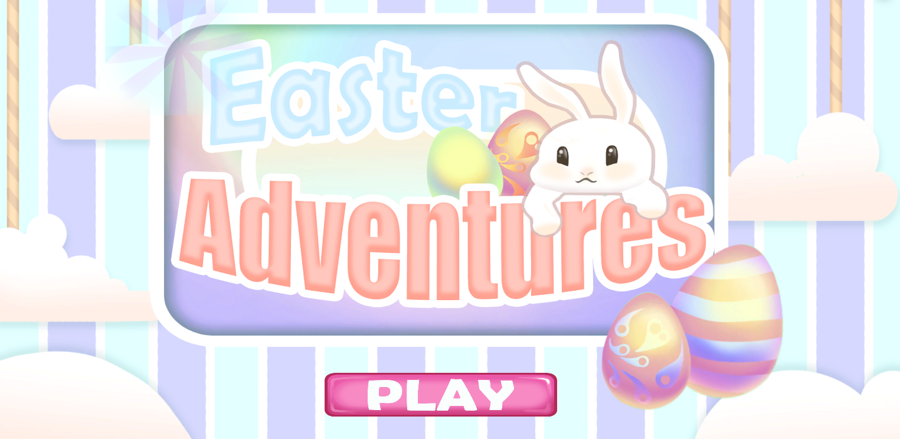 Home screen 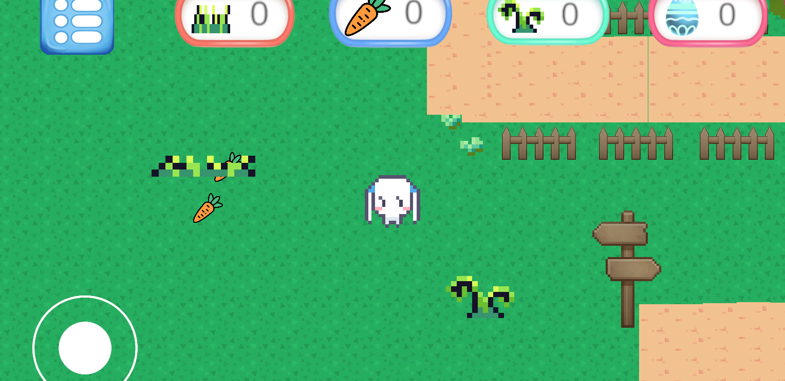 The player 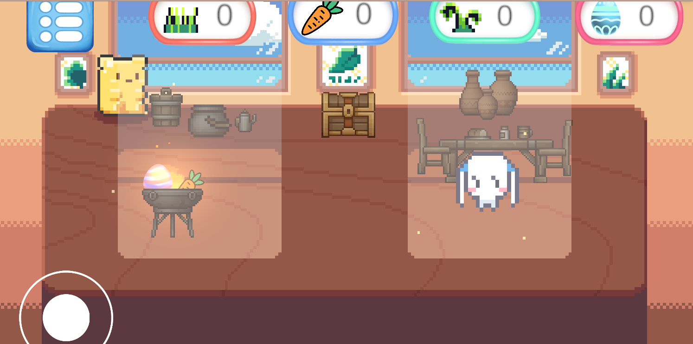 The home screen 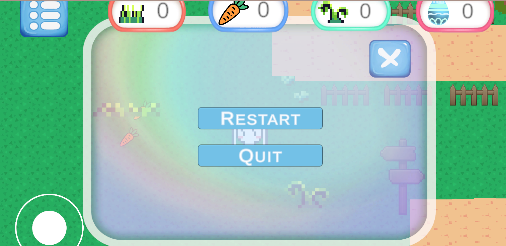 The minimenu
Thing I'm particularly proud of: The duck pond. The ducks swim back and forth so cutely!
Check it out on Unity Play
Check out the source code
Suki Platformer
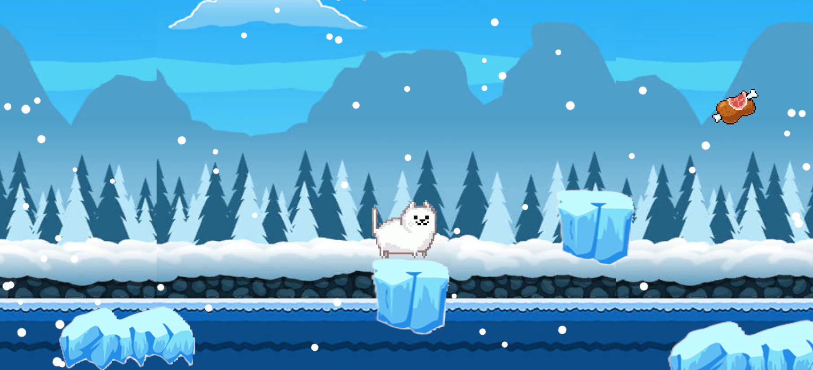 This is a 2D platformer game inspired by my dog Suki.The idea is for the player to use the AWSD keys and space bar to navigate the icebergs, jumping from one to the next.
The space bar is used to jump. The player can eat various items along the way which have unexpected results.
Feeding a dog meat? Yum yum, she might just go FAST!!!
But feeding a dog fish bones or chocolate? Bad dog owner behavior! When the player dies, they respawn at the start of the level, but not before flashing twice to show that they died.
Level 1 takes you across an icy plane, or winter in Finland, whatever you want to call it.
Level 2 however, is not complete. In level 2 I tried my hand at making my own drawing of Suki in Clip Studio Pro, and then making a sprite out of it and animating some breathing and stretching in Unity.
This was the first time I worked with particles for snow and with animations in Unity.
This was made with a variety of assets found online and on Unity Asset Store, as well as one special sprite made by yours truly.
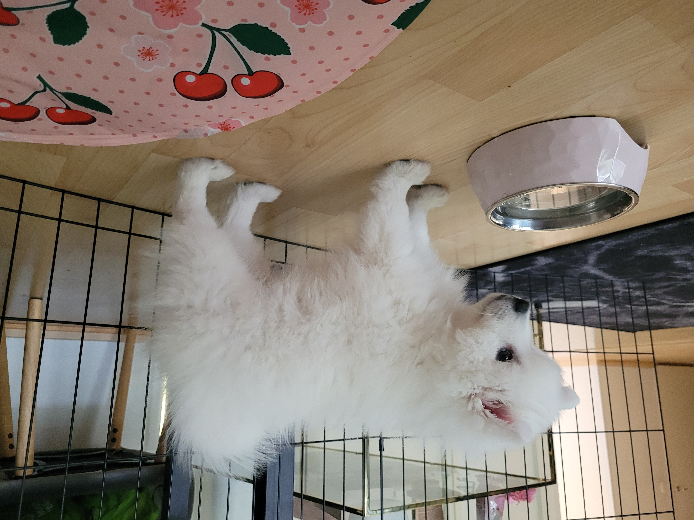 Suki herself 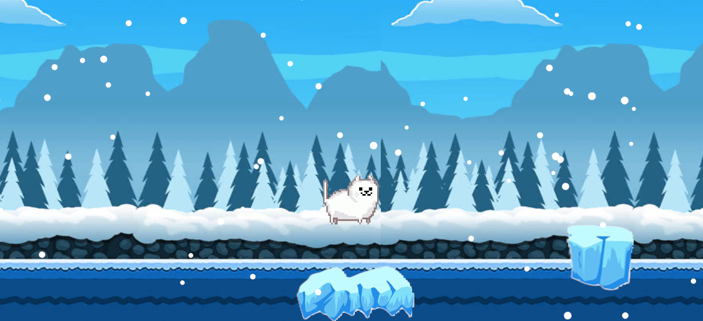 Jumping across platforms 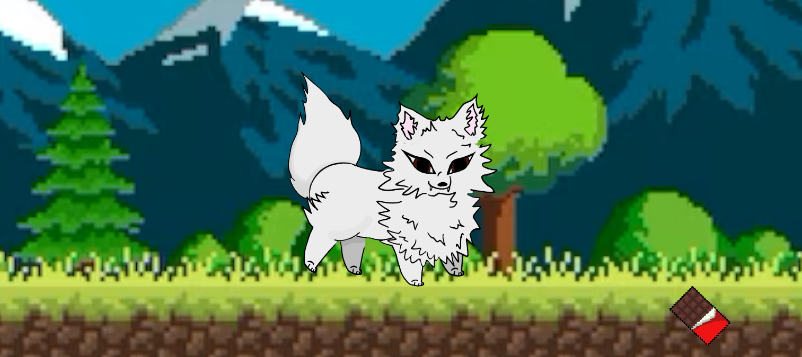 Level 2 Suki sprite
Thing I'm particularly proud of: The snow particles and Suki sprite in level 2!
Check it out on Unity Play
Check out the source code
Lava Land
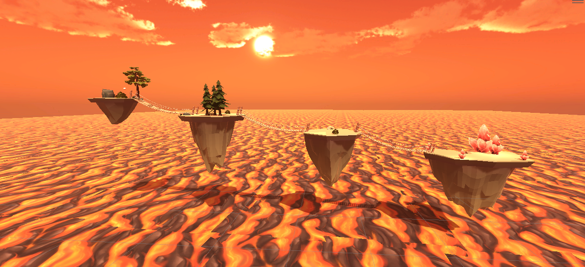 This started out as a deliverable for the Unity Essentials Pathway, but ended up becoming more simply because it was so much fun to play around in a 3D space.This has the player act as a 3D ball and follow from one platform to the next across rope bridges.
The catch? The floor is lava! Fall off of a bride or platform and you plummet into the lava below, dying.
Once you've died, you will respawn at the start point to try again.
The win criteria for the game is colliding with the crystals on the final platform, which calls up a menu asking the player to start again.
Unfortunately, back when I made this I didn't know anything about UIs or changing scenes, so the buttons don't actually do anything, how silly. There are also ash particles blowing across the screen, and the lava below is controlled by an animation in Unity which allows it to appear to be moving.
The skybox adds to the fiery feeling of the world.
The assets in this game come from Unity Asset Store. 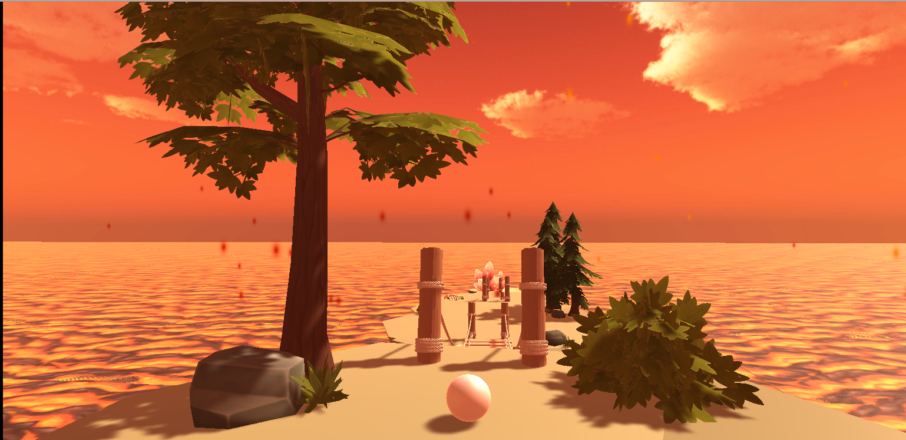 The start screen & player perspective 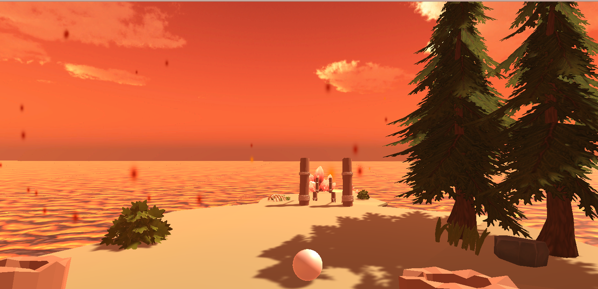 The fiery environment 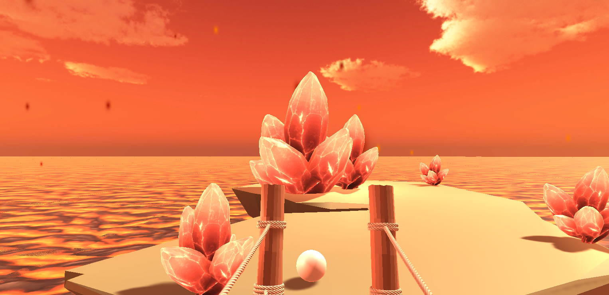 The crystals on the last platform 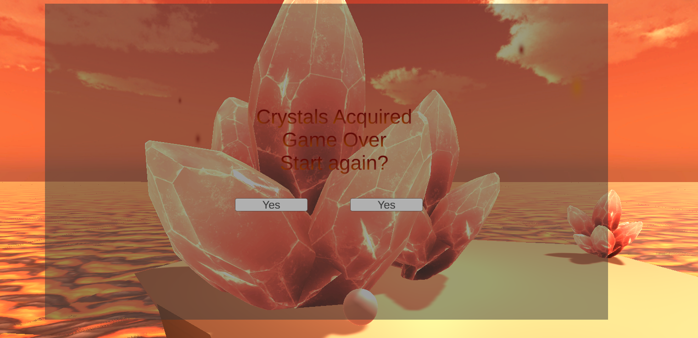 The menu upon winning
Thing I'm particularly proud of: The lava animation, the ash particles, the respawn.
Check it out on Unity Play
Check out the source code
3D Environment
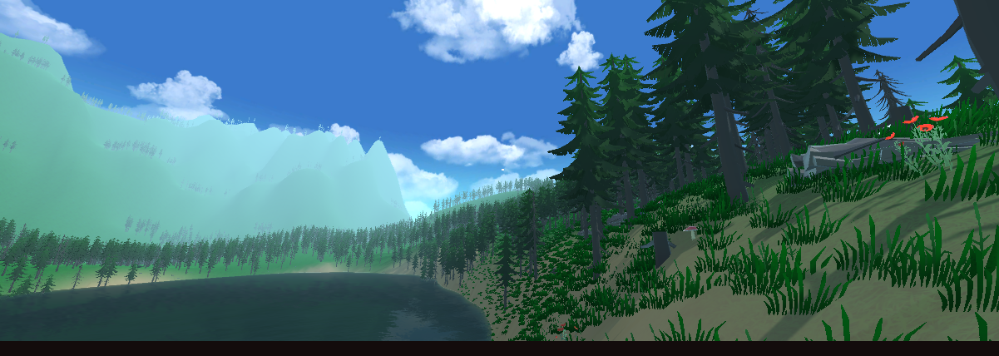 This was an exercise in building a 3D world using the terrain functionality provided by Unity.The terrain was painted, the trees, flowers, mushrooms and fallen logs were placed using prefabs and mass placement tools.
It also consisted of a first attempt at making water.
It takes awhile to load in Unity Play, but once it does, you can explore the terrain with the ASWD keys and turn the camera using the mouse.
There is no win citeria here, this was simply the first step in learning to make 3D worlds as I will need one for my thesis project.
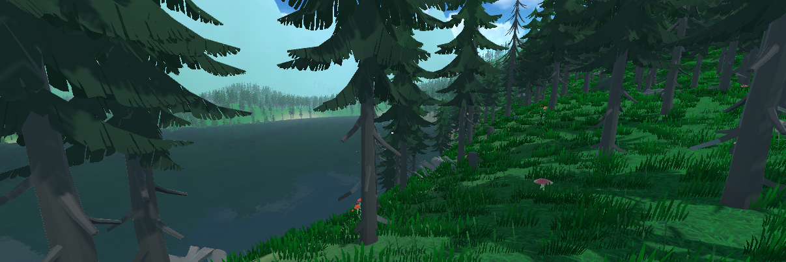 The world, lakeside 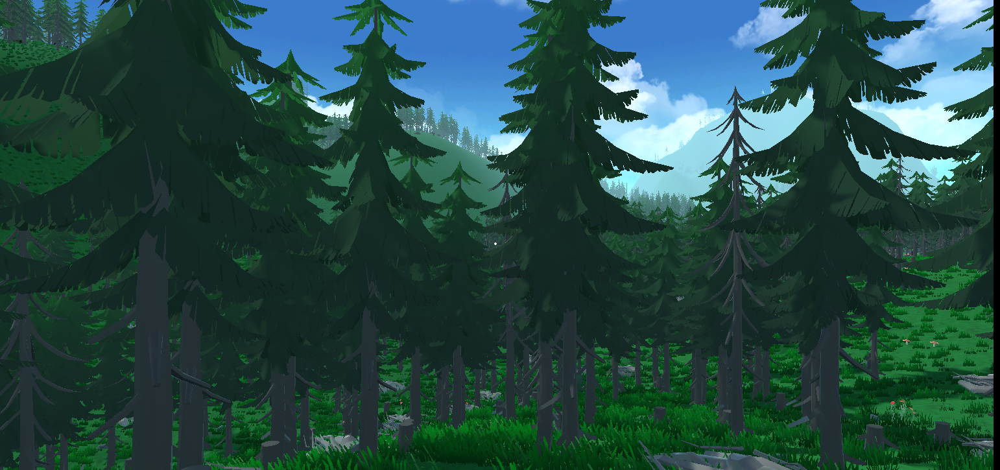 The trees
Check it out on Unity Play
Small World
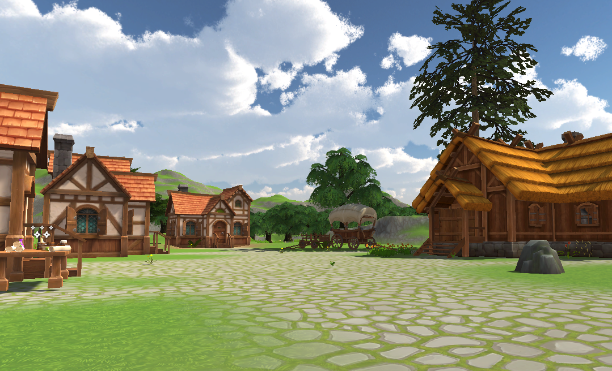 Before the 3D terrain environment exericise came the small world exercise, where I tries out an existing terrain and added some small things to it. 'In this game, there is once again no win criteria as the goal was to learn about working with 3D worlds.
This world uses the W and S keys to move back and forth and the mouse to look around and move in the direction that the player is facing.
This world features a small village with a chicken and a sheep that act independently.
The scripts and animations for these game objects is not my doing at all and comes from the asset pack.
I was experimenting with implementing existing prefabs and scripts into my project.
Also this was an exercise in editing existing prefabs and changing the coloring to blend with the world.
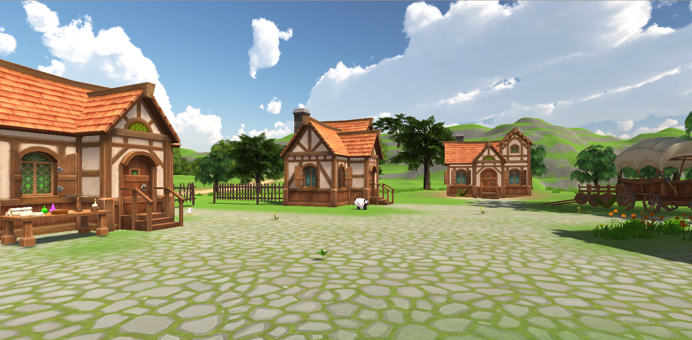 The village in the small world. 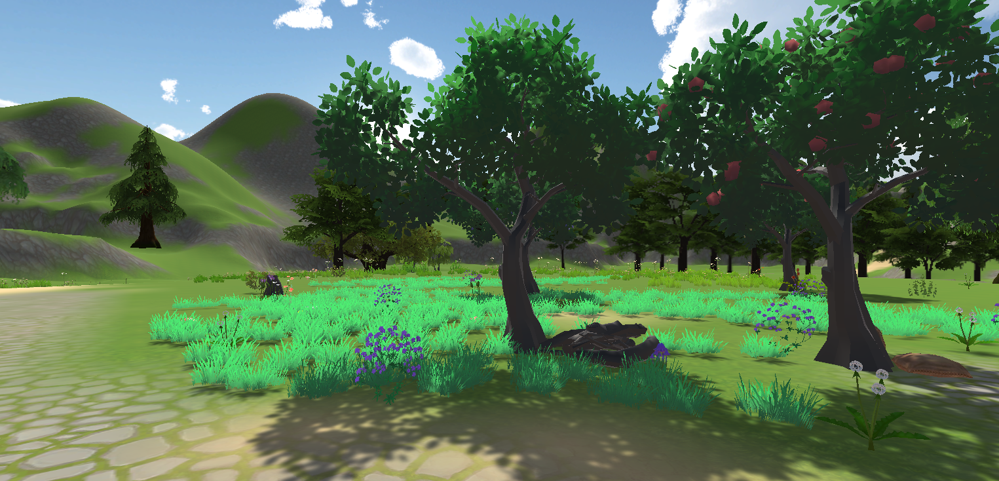 The orchard in the small world. 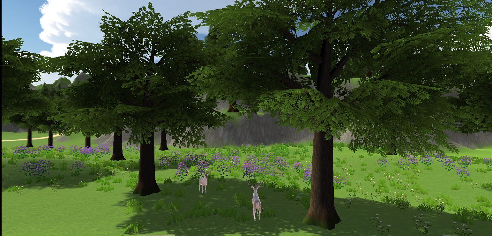 The deer grazing in the world.
Check it out on Unity Play
Jellyshark
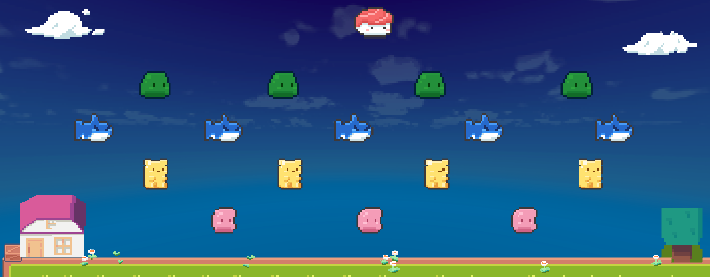Jellyshark was a deliverable for the Unity Pathways course on Unity Learn.
This was a simple pachinko inspired game, where an object falls into the field at random and encounters obstructions as it follows gravity.
In this case our object is a sushi, and it enters into the field from the top of the screen.
The other game objects provide for collision as they contain colliders.
The sushi will follow gravity, once it lands on the grass, or touches a green jelly, it dies and respawns on top of the screen.
When the sushi collides with a deathly game object, there is a 'beep' sound effect to alert the player that their sushi has expired.
There are no controls in this game and no win criteria.
The objects in the field contain animations, allowing the sharks to swim across the screen and the other objects to rock back and forth, allowing for added randomness of where the sushi will end up.
Thing I am proud of: The animations, respawning and sound effects.
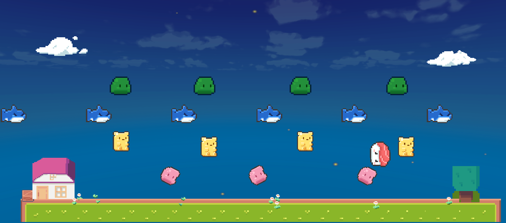 The sushi was rocked off of the pink jelly. 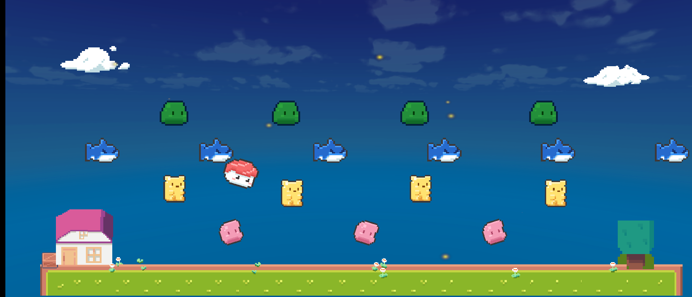 Another view of Jellyshark.
Check it out on Unity Play
Check out the source code